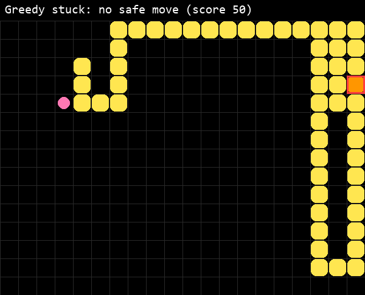
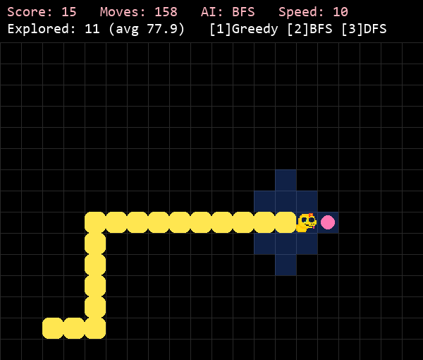
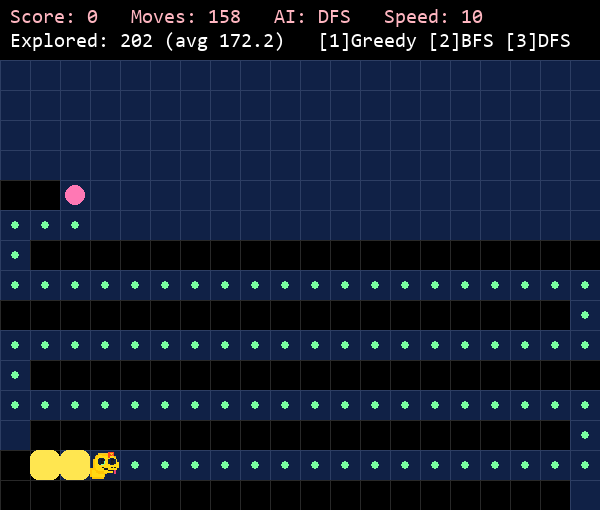
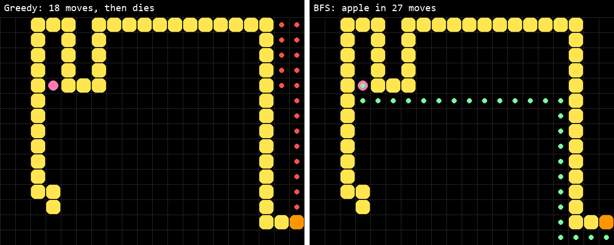
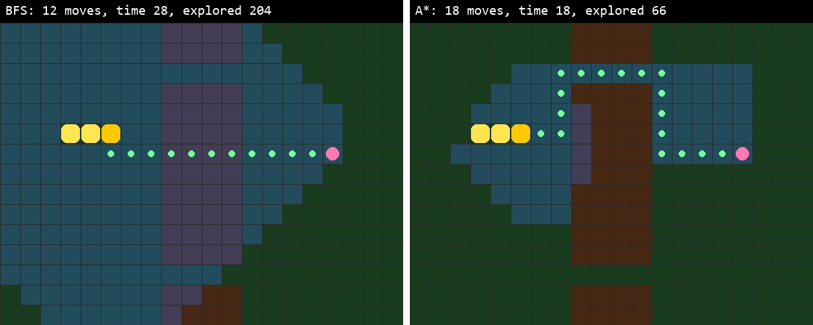

Extras done in this project:
The code is on GitHub: github.com/MadCowVN/snake-ai. It is written in Python with pygame, on a board of 20 × 15 tiles.
Every move, the greedy AI looks at the four tiles next to the head. A tile is skipped if it is outside the board or part of the snake. Of the tiles that are left, the snake moves to the one with the smallest Manhattan distance to the apple. If no tile is safe, the game is over.
I started from my own old Snake game and ran into a few problems. The window was 550 pixels with tiles of 30 pixels, so the last row and column were cut off. I changed the board to be counted in tiles. The picture of the head never turned with the snake, because the rotation code was outside the drawing loop. The apple was placed with a loop that never ends when the board is full, so now it picks from a list of free tiles. Finally, the game logic was mixed with pygame, so I moved it to its own file to be able to test the AIs without a window.
Greedy only looks one step ahead, so it gets stuck. It always moves closer to the apple, even into a corner or corridor made by its own body. When the snake is long, it walks into such a pocket and cannot get out (figure 1). On average greedy eats 27 apples before this happens.

BFS and DFS search from the head to the apple every move, with the body as a wall. For every tile I remember
the tile it came from, so I can walk back from the apple to get the path, and the snake takes the first step
of it. BFS and DFS use the same function. The only difference is one line: BFS takes the oldest tile from a
queue (popleft()) and DFS takes the newest tile from a stack (pop()). If the apple cannot
be reached, the snake takes a safe greedy step and tries again on the next move.
Table 1 compares the three AIs on 50 games each, with the same random seeds.
| AI | Apples (avg) | Apples (max) | Moves (avg) | Explored tiles per move |
|---|---|---|---|---|
| Greedy | 27.3 | 59 | 369.8 | 2.7 |
| BFS | 49.0 | 74 | 687.9 | 87.6 |
| DFS | 1.1 | 4 | 1270.4 | 155.6 |
Table 1: Greedy, BFS and DFS on the flat board.
BFS finds the shortest path because the queue takes tiles out in the order they were found. First all tiles one step away are checked, then all tiles two steps away, and so on. So when BFS reaches the apple, there is no shorter path. In figure 2 you can see BFS spreading out around the head.
DFS keeps going from the newest tile, so it follows one direction until it hits something and then turns. It does not care where the apple is, so the path becomes long and zig-zags over the board (figure 3). Because the snake searches again after every move, it gets a new plan each time and never finishes a path. In my test the snake ended up walking in a loop, which is why DFS eats only about one apple per game.


Figure 4 shows a situation where greedy gets stuck but BFS does not. The apple is on the other side of the snake's body. Greedy goes up along the right edge, because that brings it closer to the apple, and dies in the corner. BFS finds the longer way around the body and reaches the apple.

I added four kinds of terrain: grass (time 1), sand (time 2), mud (time 5) and rock, which works like a wall. Each map is a text file with one character per tile. Every move costs the time of the tile the snake moves onto, the time is shown next to the score, and the snake moves slower on expensive tiles.
I made three maps. The first, mud river, has a river of mud through the middle with two grass bridges, so there is a short way through the mud and a longer way over a bridge. The second, rocky desert, is mostly sand with rock walls, a mud pond and a grass road around the edge. The third, swamp roads, is all mud except for a grid of grass roads. I made this one to show how badly BFS can do when it ignores the cost.
Dijkstra and A* use a priority queue (heapq) instead of a normal queue. They remember the cheapest
time found so far to every tile and always continue from the tile with the lowest value. Dijkstra uses only the
time so far. A* adds a guess of the time left: the Manhattan distance times the cheapest terrain cost. This
guess is never too high, so A* still finds the fastest route, but it searches in the direction of the apple
first. The main difference with BFS is that BFS counts moves, while Dijkstra and A* count time.
Figure 5 shows an example where they choose a different route. BFS goes straight through the mud in 12 moves but uses 18 + 10 = 28 time. A* takes the bridge: 18 moves, but only 18 time.

To compare them, I ran BFS, Dijkstra and A* on every map without drawing. Each algorithm played 30 games with the same seeds for the apples and stopped at 30 apples. Table 2 shows the averages.
| Map | Algorithm | Apples | Time used | Time per apple | Moves | Explored tiles per move |
|---|---|---|---|---|---|---|
| Mud river | BFS | 29.9 | 712.0 | 23.8 | 378.8 | 91.3 |
| Dijkstra | 29.8 | 491.5 | 16.5 | 409.2 | 88.1 | |
| A* | 29.8 | 487.6 | 16.3 | 408.1 | 31.1 | |
| Rocky desert | BFS | 29.0 | 902.4 | 31.1 | 419.0 | 80.4 |
| Dijkstra | 29.9 | 758.5 | 25.4 | 517.9 | 71.7 | |
| A* | 29.9 | 758.6 | 25.4 | 516.6 | 40.5 | |
| Swamp roads | BFS | 29.9 | 1355.1 | 45.3 | 378.8 | 91.3 |
| Dijkstra | 30.0 | 697.1 | 23.2 | 462.3 | 85.7 | |
| A* | 29.8 | 691.9 | 23.2 | 455.2 | 38.5 |
Table 2: BFS, Dijkstra and A* on the three maps.
BFS always uses the fewest moves, but the most time. It loses the most time on the swamp roads map, where it needs almost twice as much time per apple, because it walks straight through the mud. Dijkstra and A* find routes that take the same time, but A* explores only about a third to half as many tiles, because it searches towards the apple. For this game I would choose A*: it is as fast as Dijkstra for the snake and does less work every move.